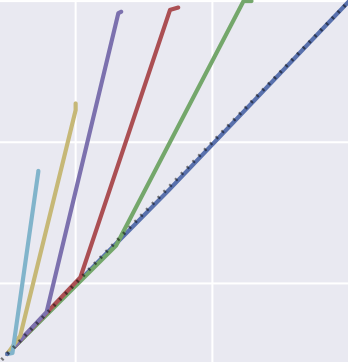
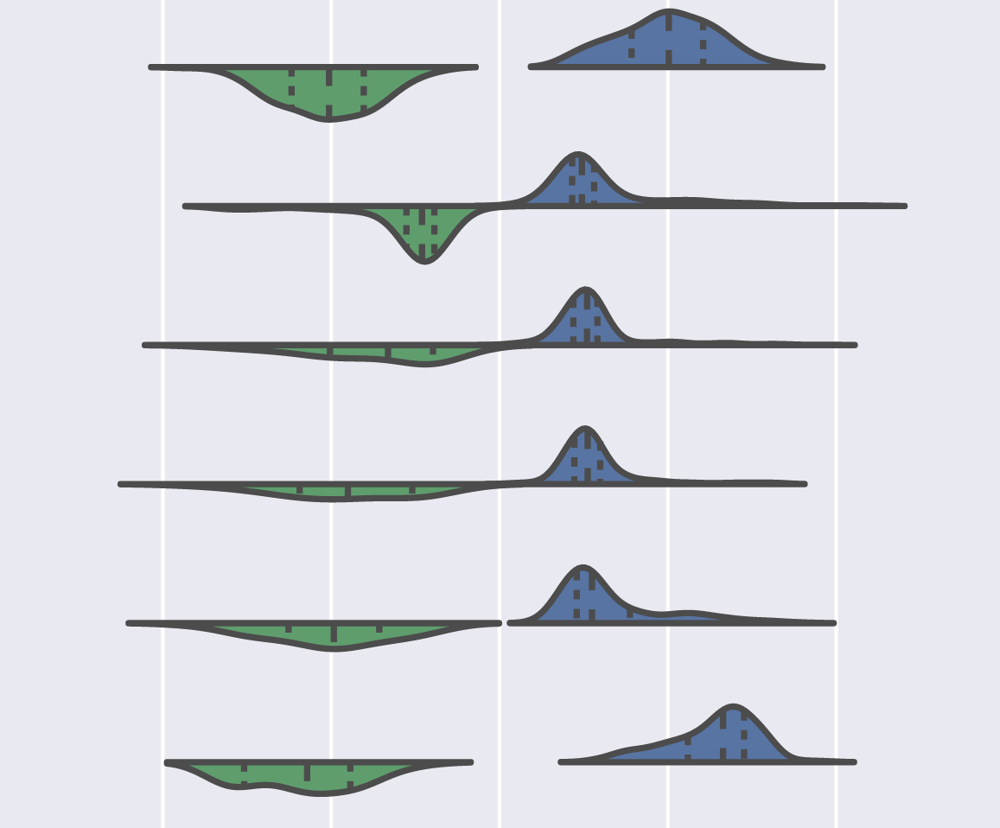
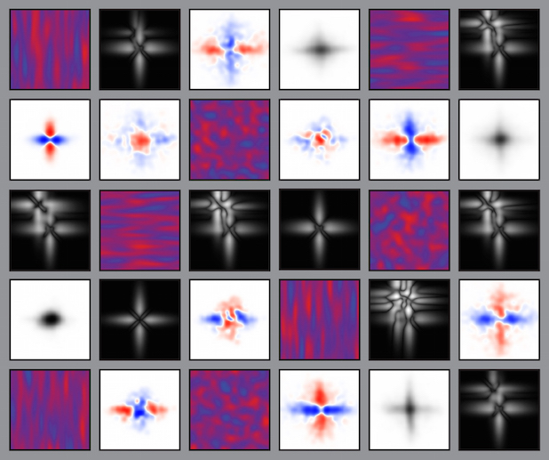
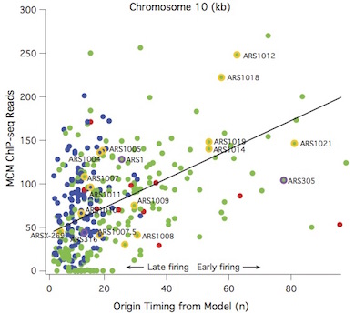
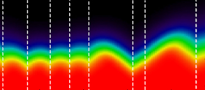
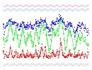
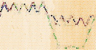
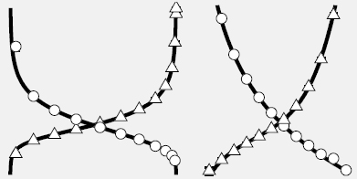
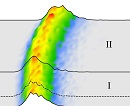

| Home | Publications | Mini-projects |
|  |
Scott Cheng-Hsin Yang and Patrick Shafto (2017) Teaching versus active learning: A computational analysis of conditions that affect learning Proceedings of the 39th Annual Conference of the Cognitive Science Society. |
|  |
Scott Cheng-Hsin Yang, Jake Alden Whritner, Olfa Nasraoui, and Patrick Shafto (2017) Unifying recommendation and active learning for human-algorithm interactions Proceedings of the 39th Annual Conference of the Cognitive Science Society. |
|
Scott Cheng-Hsin Yang, Daniel Wolpert, and Máté Lengyel (2016) Theoretical perspectives on active sensing Current Opinions in Behavioural Neuroscience 11:100-108 |
|
|  |
Scott Cheng-Hsin Yang, Máté Lengyel, and Daniel Wolpert (2016) Active sensing in the categorization of visual patterns eLife 5:e12215 [code] |
|  |
Shankar P. Das, Tyler Borrman, Scott Cheng-Hsin Yang, Victor W. T. Lui, John Bechhoefer, and Nicholas Rhind (2015) Replication timing is regulated by the number of MCMs loaded at origins Genome Research 25:1886-1892 |
|
Scott Cheng-Hsin Yang (2012) Modelling the DNA replication program in eukaryotes PhD Thesis |
|
|  |
Antoine Baker, Benjamin Audit, Scott Cheng-Hsin Yang, John Bechhoefer, and Alain Arneodo (2012) Inferring where and when replication initiates from genome-wide replication timing data Phyiscal Review Letter 108:268101 |
|  |
Scott Cheng-Hsin Yang, Nicholas Rhind, and John Bechhoefer (2010) Modeling genome-wide replication kinetics reveals a mechanism for regulation of replication timing Molecular Systems Biology 6:404 [supplementary material] [slides] [code] Rated by Faculty of 1000 Biology as MUST READ [link] |
|  |
Nicholas Rhind, Scott Cheng-Hsin Yang, and John Bechhoefer (2010) Reconciling stochastic origin firing with defined replication timing Chromosome Research 18:35 |
|  |
Scott Cheng-Hsin Yang, Michel Gauthier, and John Bechhoefer (2009) Computational methods to study kinetics of DNA replication Methods in Molecular Biology 521:555-573 |
|  |
Scott Cheng-Hsin Yang and John Bechhoefer (2008) How Xenopus laevis embryos replicate reliably: Investigating the random-completion problem Physical Review E 78:041917 [slides] Selected for a Viewpoint article: Just-in-time DNA replication |